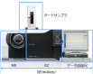

2021年
問題81 ホルムアルデヒド測定法に関する次の記述のうち，最も不適当なものはどれか．
（1）簡易測定法には，検知管法，定電位電解法がある．
（2）DNPHカートリッジは，オゾンにより正の妨害を受ける．
（3）DNPHカートリッジは，冷蔵で保存する必要がある．
（4）パッシブ法は，試料採取に8時間程度を要する．
（5）パッシブサンプリング法では，ポンプを使用しない．
2021年
問題81 正解（2） 頻出度AAA
DNPH※カートリッジを用いた測定法は，オゾンにより負の（濃度が実際より低く出る）妨害を受ける．
※ 2,4-ジニトロフェニルヒドラジン (2,4-Dinotrophenylhydrazine)
ホルムアルデヒドの測定法は2021-81-1表並びに下記参照．
2021-81-1表 ホルムアルデヒド測定法
| 種別 | 測定法名称 | |
| 精密測定法 | アクティブ法 | DNPHカートリッジ捕集－HPLC※法 ほう酸溶液捕集－AHMT※吸光光度法 TFBA※カートリッジ捕集－GC/MS※法 NETカートリッジ捕集THPLC法 |
| パッシブ法 | DNPH含浸チューブ－HPLC法 TEA含浸チューブ－吸光光度法 |
|
| 簡易測定法 | アクティブ法 | 検知管法（電動ポンプ式） 定電位電解法（DNPH干渉フィルタ法） 光電光度法（試験紙） 電気化学的燃料電池法 光電光度法（AHMT試験紙） 化学発光法 吸光光度法（拡散スクラバー法） |
| パッシブ法 | 検知紙法（バイオセンサ法） | |
※ HPLC：高速液体クロマトグラフ
※ GC/MS：ガスクロマトグラフィー質量分析
※ AHMT，TFBAなども試薬の名称である．
1．サンプリングの方法には精密測定法，現場で用いる簡易測定法に，それぞれ吸引ポンプを使うアクティブ法と分子の拡散原理によるパッシブ法がある．
2．DNPHカートリッジ捕集・溶媒描出-高速液体クロマトグラフ(HPLC)法ではオゾンによって負の妨害を受けるので，オゾンの存在が予想される場合は，オゾン除去管（粒状よう化カリウム充填管）を用いる．
検知管法では，ホルムアルデヒドと共存するアセトアルデヒド及び酸性物質は正の影響，アルカリ性物質は負の影響を与える．
ほう酸溶液捕集-AHMT吸光光度法（AHMT法），光電光度法は妨害ガスの影響をほとんど受けない．
3．試薬のDNPHカートリッジは冷蔵保存する必要があるが，TFBAカートリッジはその必要がない．
4．ガスクロマトグラフィー質量分析計（GC/MS）は，ガスクロマトグラフィーと質量分析計（マススペクトロメータ）を接続させた装置である（2021-81-1図）．
2021-81-1図 ガスクロマトグラフィー質量分析計

出典 株式会社 島津製作所
https://www.an.shimadzu.co.jp/gcms/support/faq/fundamentals/gcms.htm
ガスクロマトグラフィーは気体（ガス）状の物質を分離・精製する装置で，物質によって単離される時間が異なる．単離された物質を質量分析計でイオン化し，磁場中に飛ばして軌道の違いからその質量を質量スペクトルとして得る．その結果を示したグラフをクロマトグラムという（2021-81-2図）．
2021-81--2図 クロマトグラムの例
出典 公益社団法人 日本建築衛生管理教育センター
「新建築物の環境衛生管理第2版第1刷」中巻284頁 図5-3-3(6)